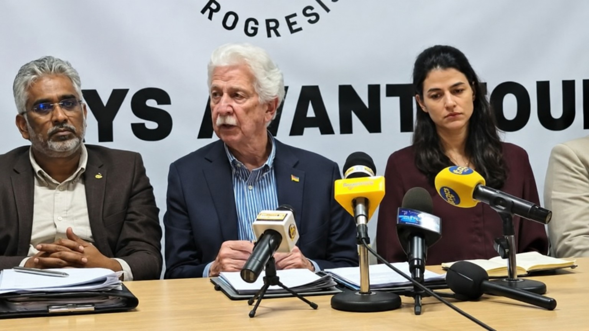

Message of support for Joanna
Message de soutien publié sur le site FMP No. 7.
Message de soutien publié sur le site FMP No. 7.
Déclarations lors d’une conférence de presse le 7 novembre.
Publication sur le Select Committee et l’usage du Kreol Morisien.
Dates réelles des publications : aucune actualité du 8 novembre n’est présentée sans source.
Députés associés au FMP, chronologie documentée et données électorales de la circonscription n°7. Chiffres sourcés et contexte historique.
Le 9 mai 2026, le Fron Militan Progresis a présenté son emblème lors de son congrès fondateur, selon 5Plus.
Lire l'article →There are certainly some people who tremble with fear because of you, Joanna, for your honest work. After all, jealousy has always existed and will always exist. They certainly attack you because they can't do a quarter of what you do. Good luck, Joanna ⭐️💜
Lire le message →
Paul Bérenger is demanding the establishment of a new government team as soon as possible.
Lire l’article →À l’occasion de la Journée internationale de la langue et de la culture créoles, un texte partagé sur Facebook évoque les interventions de Joanna Bérenger sur l’usage du Kreol Morisien au Parlement. Le Select Committee chargé de cette question a été constitué le 4 août 2026.
Repère : la Journée internationale du créole est célébrée le 28 octobre, et non le 7 novembre.
Lire l’article et ses sources →Les commentaires et mentions « J’aime » sont enregistrés sur cet appareil uniquement. Ils ne sont pas visibles par les autres visiteurs.
Retrouvez les informations publiques et les sources associées.
Consultez les activités annoncées lorsque leurs détails seront confirmés.
Découvrez la vocation de ce site consacré à la circonscription n°7.
Découvrez les 10 images d’archives, la photo de conférence de presse, le logo et la bannière du site, ainsi que des liens crédités vers les reportages photographiques des médias.
Aucune vidéo publiée actuellement. Cette rubrique accueillera uniquement des contenus disponibles et vérifiés.
Les commentaires et mentions « J’aime » sont enregistrés sur cet appareil uniquement. Ils ne sont pas encore visibles par les autres visiteurs.